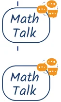

In Grade 7, we learned about ‘Think of a Number’ tricks, like this one.
- 1.Think of a number.
- 2.Double it.
- 3.Add four.
- 4.Divide by two.
- 5.Subtract the original number you thought of.
I predict you get 2. Am I right? Try it out with different starting numbers. Do you always end up with the same value, 2? Why? We saw that we can understand such tricks through algebra.
- 1.Think of a number: x
- 2.Double it: 2x
- 3.Add four: \(2x + 4\)
- 4.Divide by 2: \(x + 2\)
- 5.Subtract the original number you thought of: \(x + 2 - x = 2\)
Therefore, no matter what the starting number is, the end result will

How would you change this game to make the final answer 3? What about 5?
Can you come up with more complicated steps that always lead to the same final value?
Let us now look at a different trick of this type.
26/01 Think of a date.
\(1 \times 5 = 5\)
Multiply the month by 5.
Add 6. \(5 + 6 = 11\)
Multiply by 4. \(11 \times 4 = 44\)
Add 9. \(44 + 9 = 53\)
Multiply by 5. \(53 \times 5 = 265\)
Add the day.
Tell me your answer.
\(265 + 26 = 291\).
You thought of our Republic Day, 26/01.
How did Shubham figure out the date chosen by Mukta?
- •Let the month be M and the day be D.
- •Multiply M by 5: 5M

- •Add 6: \(5M + 6\)
- •Multiply by 4: \(20M + 24\)
- •Add 9: \(20M + 33\)
- •Multiply by 5: \(100M + 165\)
- •Add the day: \(100M + 165 + D\)
Mukta’s answer was 291.
- •\(291 = 100M + 165 + D\)
- •\(291 - 165 = 100M + D\)
- •\(126 = 100M + D\)
Since D is a day within a month, it is atmost 31 and requires only 2 digits. So the last 2 digits are D and what comes before that is M. In this case, M is 1 and D is 26, i.e., the 26th of January.
Mukta thinks of another date, follows the same steps, and reports her answer as 1390. What date did Mukta start with this time?
- •Subtracting 165 from 1390, we get 1225.
- •This means that the date she thought of was 25th December.
Find the dates if the final answers are the following:
- (i)1269
- (ii)394
- (iii)296
You can try this trick with your friends. Ask them to choose the starting date as their birthday.

Can you change the steps in this trick and still find the original date? Instead of subtracting 165 from the final answer, you might have to subtract some other number.
Try to devise your own ‘Think of a Number’ trick.